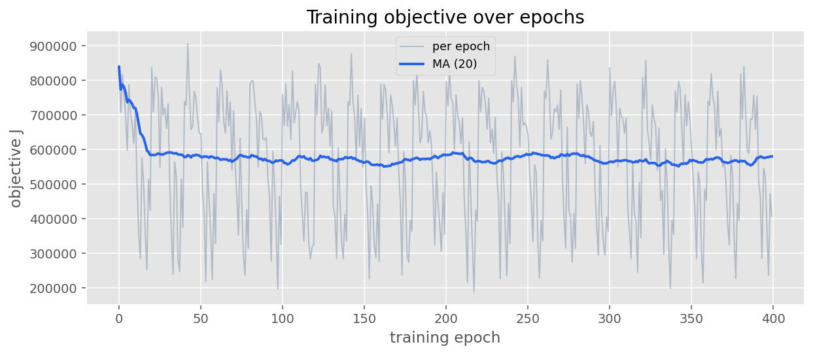
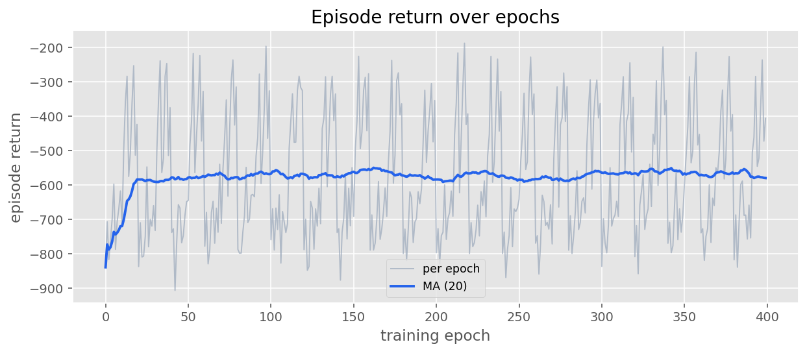
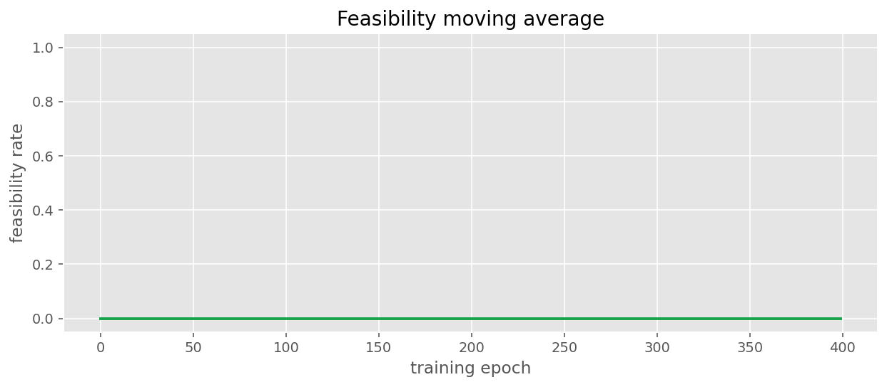
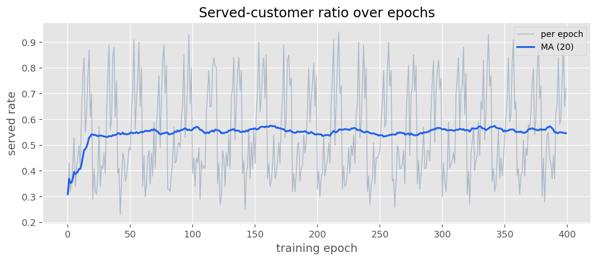
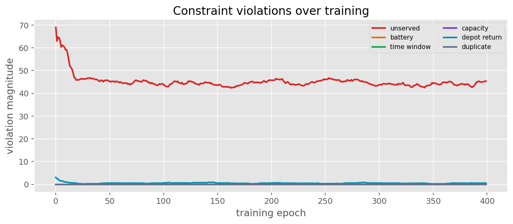
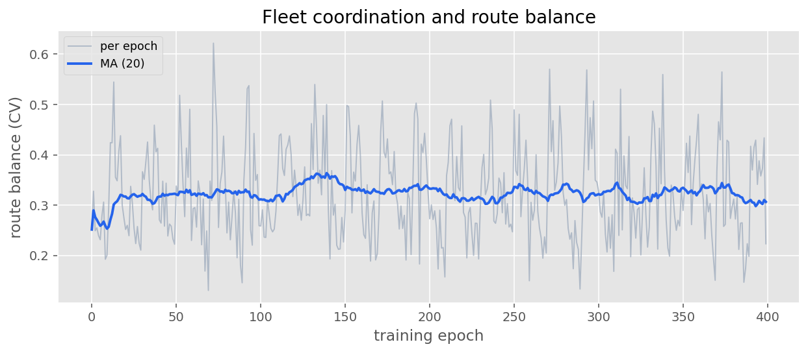
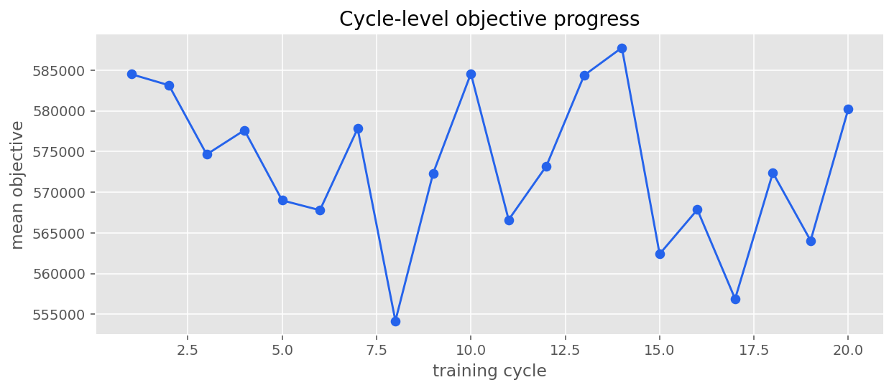
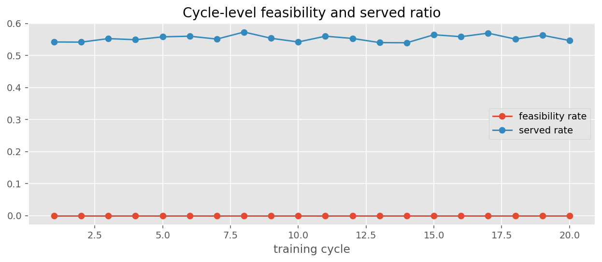
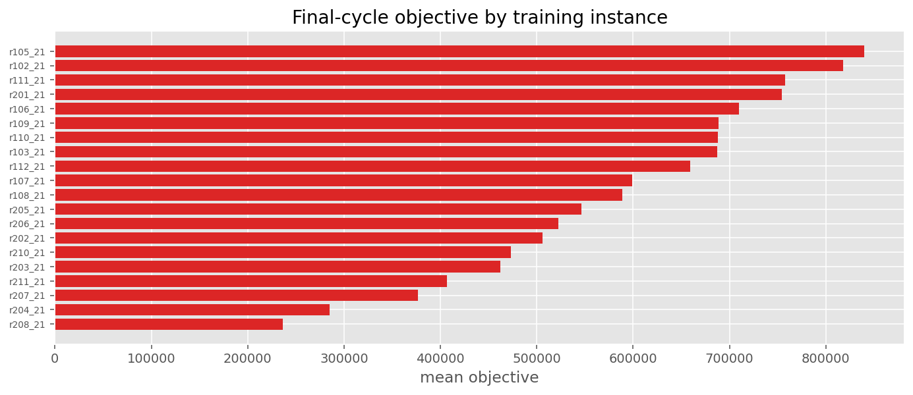

Learning curves
Training objective over epochs
Shows whether the MARL policy is reducing the EVRP solution cost.


Episode return over epochs
Shows whether the actor-critic learning signal improves over time.



Feasibility and constraints
Feasibility moving average
Shows whether the model produces feasible EVRP solutions more often.


Served-customer ratio over epochs
Shows whether the policy learns to serve all customers.


Constraint violations over training
EVRP constraint learning: battery, capacity, time windows, depot return.



EVRP operational behavior


MARL coordination
Fleet coordination and route balance
Std/mean of per-EV route distance — load balance across agents.


Cyclic schedule analysis
Cycle-level objective progress
Mean objective per full pass over training instances.


Cycle-level feasibility and served ratio
Aggregate feasibility and coverage per cycle.



Final-cycle objective by training instance
Hardest training instances in the last cycle.


Index
See figures_index.md for metrics and status.